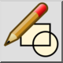
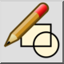
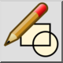
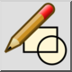

Editar un bloque de una referencia
Barra de herramienta / icono:
 

Menú: Bloque > Editar un bloque de una referencia
Acceso directo: B, D
Comandos: blockeditfromreference | bd
Esta es una traducción automática.
Barra de herramienta / icono:
 

Menú: Bloque > Editar un bloque de una referencia
Acceso directo: B, D
Comandos: blockeditfromreference | bd